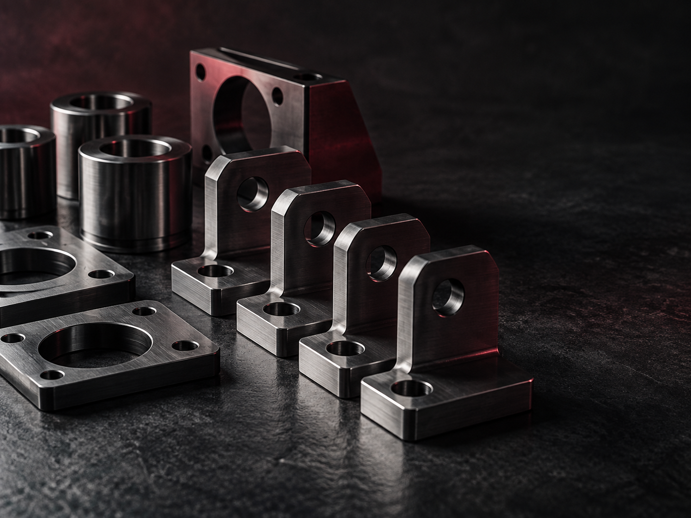
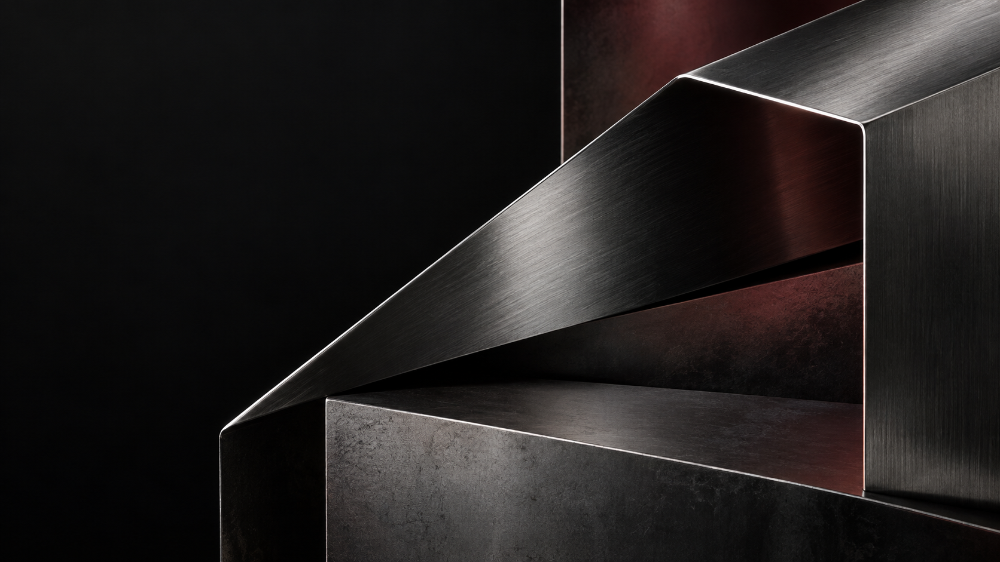
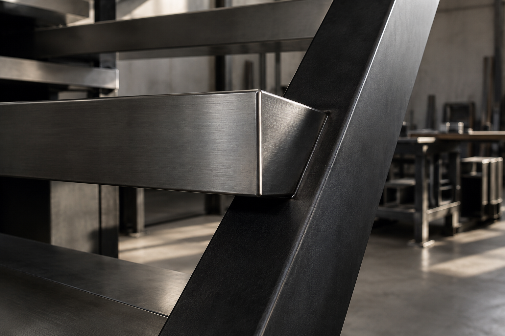

01 / Materials01 — 04

Fabriquem peces i conjunts metàl·lics en sèries curtes per a fabricants, enginyeries i integradors.
Un taller per passar del plànol a la peça.
Materials, maquinària i soldadura per valorar cada peça amb dades concretes. Les mides, els gruixos i les toleràncies es revisen amb el plànol.


Sis furgonetes i un camió ploma per als desplaçaments i el muntatge.
Podem valorar encàrrecs que requereixin suport d'arquitectura tècnica.
ISO 9001 en implantació
ISO 3834 en estudi
Material, soldadura, muntatge i quantitat es valoren conjuntament abans de fabricar. Cada sèrie es concreta segons els seus requisits.
Una seqüència per ordenar la conversa tècnica i la fabricació. La profunditat de cada etapa depèn de l'encàrrec.
Revisem què cal fabricar, el material, les unitats i la documentació disponible.
Organitzem la feina segons la peça i resolem els dubtes tècnics.
Fabriquem, soldem i muntem segons l'abast acordat.
Revisem el treball d'acord amb els requisits concretats per al projecte.
Plànol o documentació · material · unitats · aplicació · termini que necessites
L'empresa ha treballat en aquests àmbits. Cada encàrrec es valora segons la peça, l'aplicació i els requisits concrets.
Gràfics abstractes de la maqueta. No representen treballs ni homologacions de Carbó Industrial.
Fabricació i subministrament de deu gàbies per a un client industrial l'any 2023. El material i la soldadura es van escollir segons les exigències de pes de l'ús previst.
Parlem d'un projecte semblantComparteix la documentació disponible i les dades bàsiques de l'encàrrec. Per a feines de sèries, podem estudiar projectes d'arreu de Catalunya.